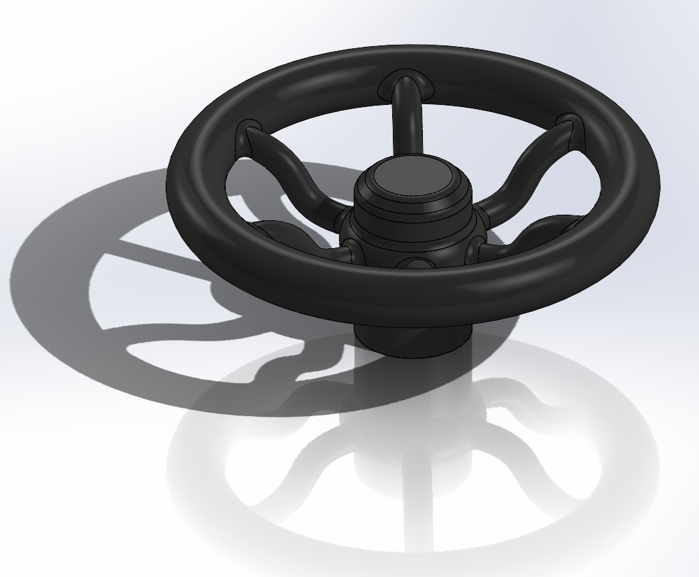

Afterburning turbojet: 93 kN of thrust at 2,800 m
For my final propulsion project I modeled a complete turbojet cycle from inlet to nozzle, then sized the heat addition, work balance, and exit conditions by hand. Starting from 78 kg/s of airflow at Mach 0.51, the cycle heats the air from 270 K to 2,218 K.
Total gas temperature through the engine. The nozzle exit value is the static temperature after expansion.
Inputs I was given
| Component | Specification |
|---|---|
| Flight condition | 2,800 m altitude, 71.9 kPa, 270 K, 166.7 m/s (Mach 0.51), 0.5 m² inlet, 77.96 kg/s of air |
| Compressor | 14 stages, 0.98 stage efficiency, overall pressure ratio 40 |
| Combustor | JP-8, 43,260 kJ/kg heating value, 1.36 kg/s of fuel (4,888 kg/h) |
| Turbine | 4 stages, 0.95 stage efficiency |
| Afterburner | JP-8, 2.28 kg/s of fuel (8,206 kg/h) |
| Nozzle | 0.15 m² exit area, 0.90 efficiency |
What I calculated
| Station | Result |
|---|---|
| Compressor | Worked stage by stage with isentropic efficiency, tabulating pressure, density, temperature, and enthalpy at every station. Exit state: 2.88 MPa and 791 K. |
| Combustor | Fuel-air ratio of 0.0174 raises the gas to 1,528 K. |
| Turbine | Extracts exactly the compressor’s 40.8 MW, a 512 K drop and a 4.5:1 pressure ratio, leaving 0.64 MPa at 1,016 K. |
| Afterburner | Reheats the flow by about 1,200 K to 2,218 K. |
| Nozzle | The 0.15 m² exit area matches the choked flow condition at this mass flow, so the nozzle exits near sonic at about 345 kPa. |
Assumptions: cold-air standard (R = 287 J/kg·K, cp = 1.005 kJ/kg·K, k = 1.4), complete combustion, no pressure loss in the burners, and a turbine that drives only the compressor.
SolidWorks CAD models
Parts and assemblies I’ve modeled while teaching myself SolidWorks, from a keyed shaft bracket to a wing with ribs, spars, and skin.


Shaft bracket
A bracket with a keyed shaft bore, a clevis tab, a slotted mounting foot, and a bolted flange.


Vented housing
A cover with five swept vent slots, a ring of small cooling slots around a central bore, and three bolt bosses.


Six-spoke handwheel
A handwheel with a rounded rim, six spokes, and a stepped hub.


Swept-blade wheel
An open-frame wheel with curved blades running between two rims and a central hub.

Wing structure
A wing section with ribs, spars, and stringers, with the skin shown over part of the span.
More work
Rocketry, SEDS at Texas A&M
Designed, built, and launched a B-motor rocket on my own, using SolidWorks and CAD. Sponsored to attend SpaceVision 2026, the national SEDS-USA conference.
International research in Yucatán
Led a team of 6 on a comparative study of youth suicide mortality in Yucatán and Texas, drawing on INEGI and CDC data and 15+ sources. Proposed a mandatory mental health curriculum starting in 5th grade.
Design and communications
As Public Relations Officer for the Aggie Society for Anime and Manga Art, I designed 80+ graphics and flyers and grew membership 45%, from 1,000 to 1,450.
Background
B.S. in Aerospace Engineering, Texas A&M University, expected May 2028. Gates Scholar and Posse Scholar. Coursework includes aerodynamics, high-speed aerodynamics, aerothermodynamics, and aerostructural analysis. Tools: MATLAB, Python, SolidWorks.